library(tidyverse)
library(skimr)
library(janitor)
library(lubridate)
library(viridis)
library(scales)
library(gganimate)
theme_set(theme_bw(base_size = 18))
options(scipen = 999, digits = 4)Introduction
WPRDC has published a dataset on car crashes in Allegheny County from 2004-2017. I was interested to see if there were any patterns or interesting trends in the data.
Setup
my_subtitle <- "Allegheny County crash data 2004-2017"
my_caption <- "@conor_tompkins - Data from WPRDC"Load data
The data was difficult to work with, so I condensed my data munging and cleansing workflow into the following scripts. I may write a post about that process in the future.
source("https://raw.githubusercontent.com/conorotompkins/allegheny_crashes/master/scripts/02_factorize_columns.R")
source("https://raw.githubusercontent.com/conorotompkins/allegheny_crashes/master/scripts/03_clean_data.R")
df <- data %>%
mutate(casualty_count = injury_count + fatal_count)
rm("data", "df_combined_allegheny_county_crash_data_2004_2017_factorized", "df_dictionary")This graph shows that the number of crashes per year is stable, with some year-to-year variation.
df %>%
mutate(crash_year = factor(crash_year)) %>%
count(crash_year) %>%
ggplot(aes(crash_year, n, group = 1)) +
geom_line() +
geom_point() +
scale_y_continuous(limits = c(0, 13000),
label=comma) +
labs(title = "Crashes per year",
subtitle = my_subtitle,
x = NULL,
y = "Number of crashes",
caption = my_caption) +
theme(axis.text.x = element_text(angle = 75, hjust = 1))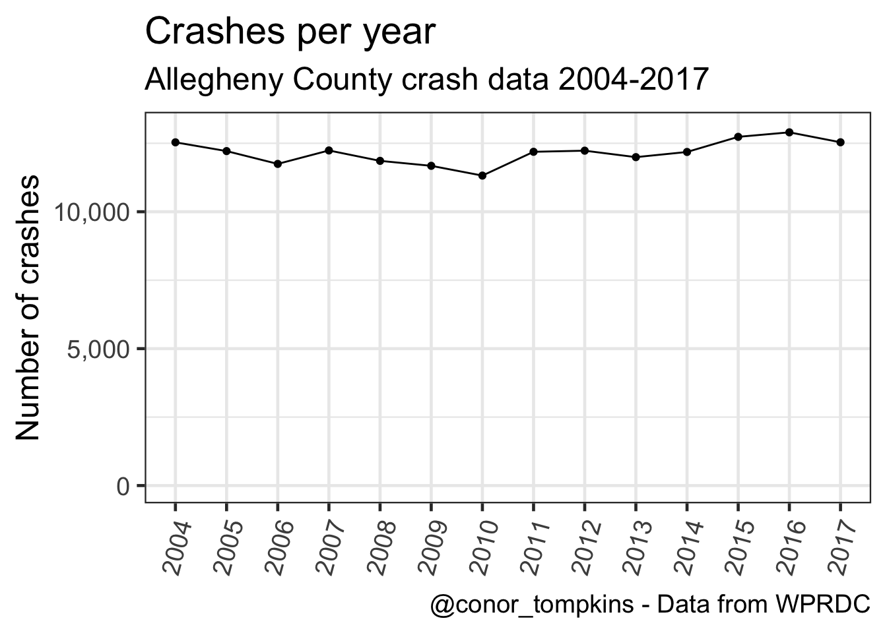
This shows that the number of crashes per month has varied similarly over the years:
df %>%
mutate(crash_year = factor(crash_year)) %>%
count(crash_year, crash_month) %>%
ggplot(aes(crash_month, n)) +
geom_smooth(aes(group = 1)) +
geom_jitter(aes(color = crash_month),
height = 0,
width = .25,
alpha = .5,
show.legend = F) +
scale_y_continuous(label = comma) +
scale_color_viridis("Month",
discrete = TRUE) +
labs(title = "Crashes per month",
subtitle = my_subtitle,
x = "1 dot = Month/Year. Jitter applied",
y = "Number of crashes",
caption = my_caption) +
theme(axis.title.x = element_text(size = 12))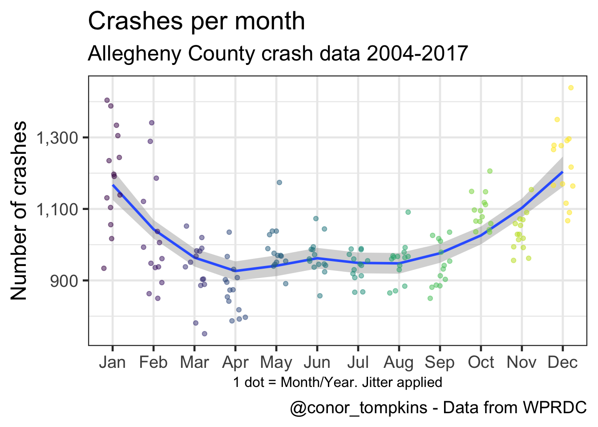
This shows that there is much greater variation between weekdays, though there is still a perceptible pattern.
df %>%
count(crash_year, crash_month, day_of_week) -> df_months_year_dow
df_months_year_dow %>%
group_by(day_of_week) %>%
summarize(median = median(n)) -> df_dow
df_months_year_dow %>%
ggplot(aes(day_of_week, n)) +
geom_jitter(aes(color = day_of_week),
height = 0,
alpha = .3,
show.legend = F) +
geom_point(data = df_dow,
aes(x = day_of_week,
y = median,
fill = day_of_week),
color = "black",
size = 4,
shape = 21,
show.legend = F) +
scale_color_viridis(discrete = TRUE) +
scale_fill_viridis(discrete = TRUE) +
scale_y_continuous(label = comma) +
labs(title = "Crashes per weekday",
subtitle = my_subtitle,
x = "Large dot = median, small dot = Weekday/Month/Year. Jitter applied",
y = "Number of crashes",
caption = my_caption) +
theme(axis.title.x = element_text(size = 12),
axis.text.x = element_text(size = 12))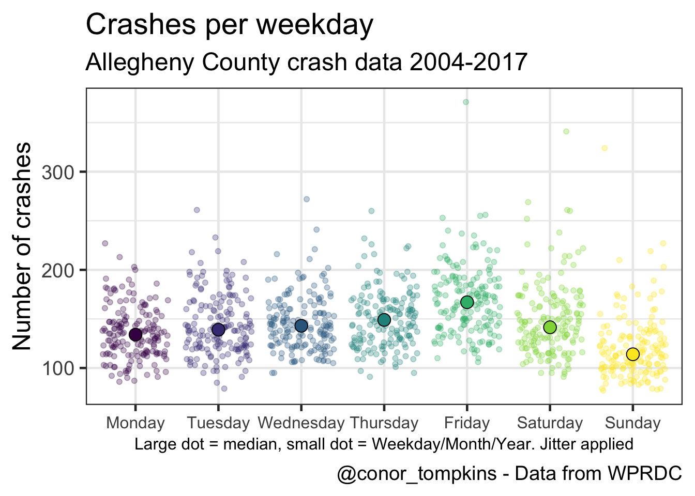
This shows that the number of crashes increases in the fall and winter.
df %>%
mutate(crash_month = fct_rev(crash_month)) %>%
count(crash_year, crash_month) %>%
ggplot(aes(crash_year, crash_month, fill = n)) +
geom_tile() +
coord_equal() +
scale_x_continuous(expand = c(0,0),
breaks = c(2004:2017)) +
scale_y_discrete(expand = c(0,0)) +
scale_fill_viridis("Number of crashes",
labels = comma) +
labs(title = "Crash heatmap",
subtitle = my_subtitle,
x = NULL,
y = NULL,
caption = my_caption) +
theme(panel.grid = element_blank(),
axis.text.x = element_text(angle = 75, hjust = 1))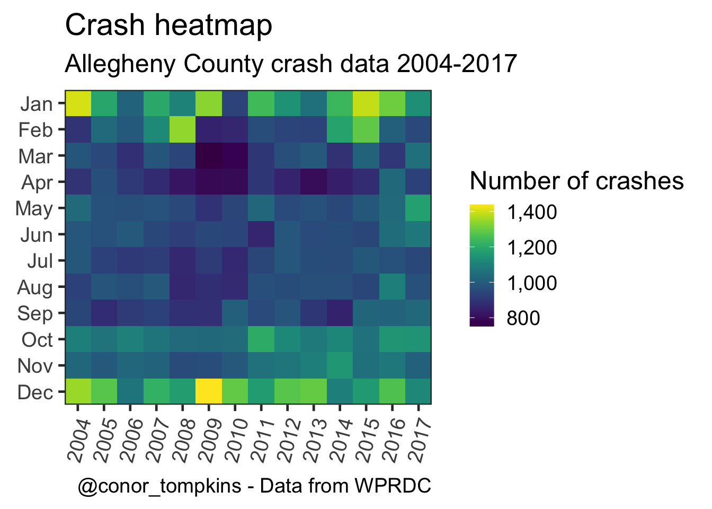
These plots show how the number of crashes changes throughout the day.
df %>%
mutate(day_of_week = fct_rev(day_of_week)) %>%
filter(!hour_of_day > 24,
!is.na(day_of_week)) %>%
count(day_of_week, hour_of_day) %>%
ggplot(aes(hour_of_day, day_of_week, fill = n)) +
geom_tile() +
coord_equal() +
labs(title = "Crash heatmap",
subtitle = my_subtitle,
x = "Hour of day",
y = "",
caption = my_caption) +
scale_y_discrete(expand = c(0,0)) +
scale_x_continuous(expand = c(0,0)) +
scale_fill_viridis(labels = comma,
"Number of crashes") +
theme(legend.position = "bottom",
legend.direction = "horizontal",
legend.text = element_text(size = 8,
angle = 300))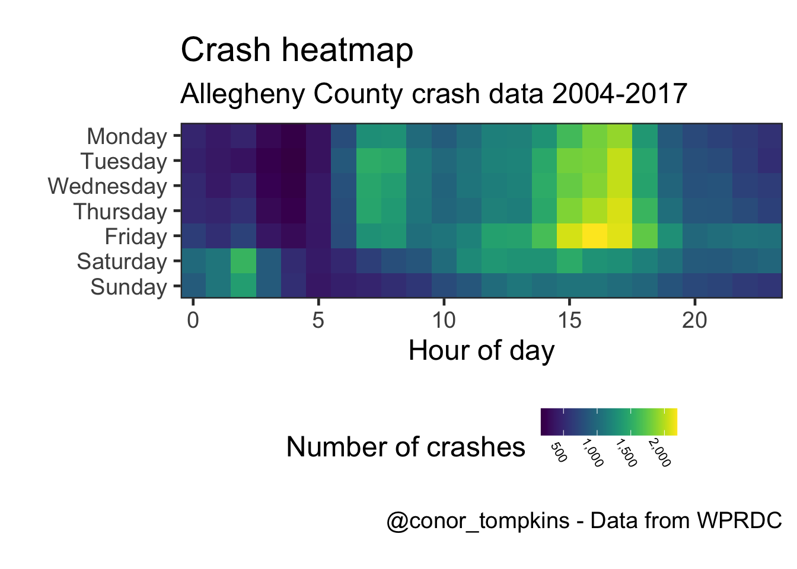
This shows a more granular view:
df %>%
select(day_of_week, time_of_day) %>%
filter(!time_of_day > 2400,
!is.na(day_of_week)) %>%
mutate(day_of_week = fct_rev(day_of_week),
hour = time_of_day %/% 100,
minute = time_of_day %% 100) %>%
count(day_of_week, hour, minute) %>%
complete(day_of_week, hour = 0:23, minute = 0:60) %>%
replace_na(list(n = 0)) %>%
mutate(time = make_datetime(hour = hour, min = minute),
time = round_date(time, unit = "15 minutes")) %>%
group_by(day_of_week, time) %>%
summarize(n = sum(n)) -> df_time_rounded
df_time_rounded %>%
ggplot(aes(time, day_of_week, fill = n)) +
geom_tile() +
scale_y_discrete(expand = c(0,0)) +
scale_x_datetime(date_labels = ("%H:%M"),
expand = c(0,0)) +
scale_fill_viridis("Number of crashes") +
labs(title = "Crash heatmap",
subtitle = my_subtitle,
x = "Time (rounded to nearest 15 minutes)",
y = "",
caption = my_caption) +
theme(legend.position = "bottom",
legend.direction = "horizontal",
legend.text = element_text(size = 8, angle = 300))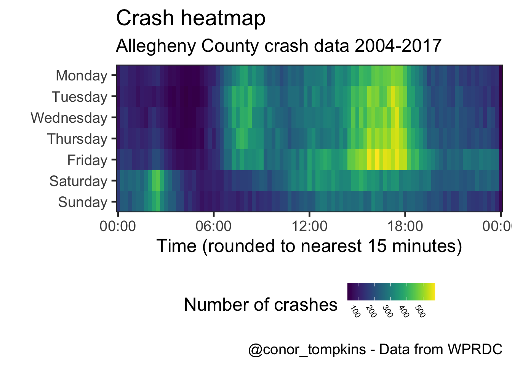
This is a different veiew of the same data. Saturday and Sunday behave differently than the weekdays.
df %>%
select(time_of_day, day_of_week) %>%
filter(!time_of_day > 2400,
!is.na(day_of_week)) %>%
mutate(hour = time_of_day %/% 100,
minute = time_of_day %% 100,
time = make_datetime(hour = hour, min = minute),
time = round_date(time, unit = "15 minutes")) %>%
ggplot(aes(time, color = day_of_week)) +
geom_freqpoly(size = 2) +
scale_color_viridis("Weekday",
discrete = TRUE) +
scale_x_datetime(labels = date_format("%H:%M")) +
scale_y_continuous(labels = comma) +
labs(title = "Number of crashes",
subtitle = my_subtitle,
x = "Time (rounded to nearest 15 minutes)",
y = "Number of crashes",
caption = my_caption)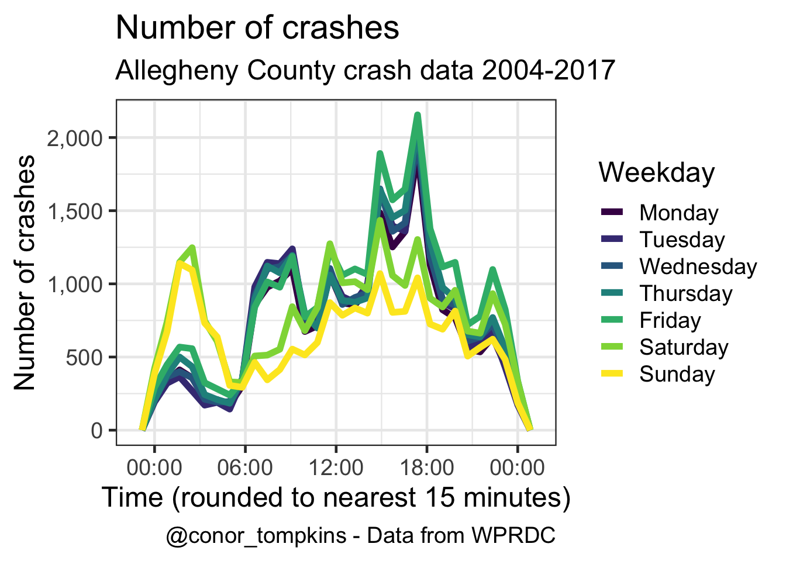
This shows that there are more casualties (injuries and fatalities) per person involved in the crash in the early morning.
df %>%
mutate(day_of_week = fct_rev(day_of_week)) %>%
filter(hour_of_day < 24) %>%
group_by(day_of_week, hour_of_day) %>%
summarize(person_sum = sum(person_count, na.rm = TRUE),
casualties_sum = sum(casualty_count, na.rm = TRUE),
casualties_per_person = casualties_sum / person_sum) %>%
ggplot(aes(hour_of_day, day_of_week, fill = casualties_per_person)) +
geom_tile() +
coord_equal() +
scale_y_discrete(expand = c(0,0)) +
scale_x_continuous(expand = c(0,0)) +
scale_fill_viridis("Casualties per person") +
labs(title = "Casualties per person",
subtitle = my_subtitle,
x = "Hour",
y = "",
caption = my_caption) +
theme(legend.direction = "horizontal",
legend.position = "bottom",
legend.text = element_text(size = 8,
angle = 300))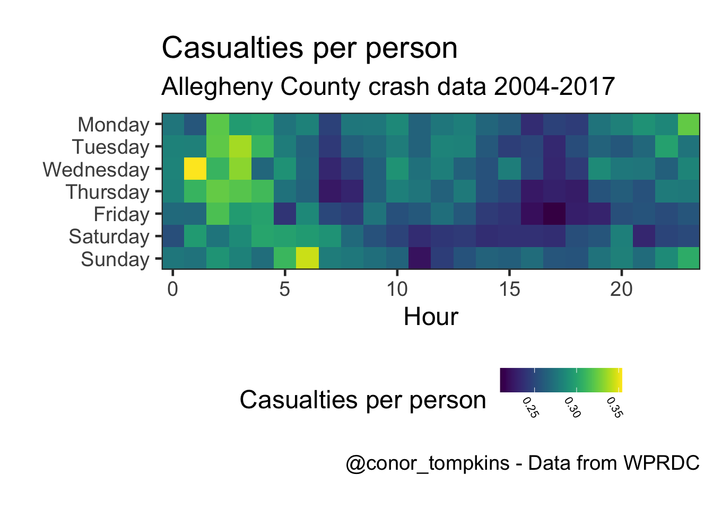
The number of injuries and fatalities follow the same general pattern, but it is less pronunced in the fatality data.
df %>%
select(crash_year, crash_month, injury_count, fatal_count) %>%
gather(measure, value, -c(crash_year, crash_month)) %>%
mutate(measure = factor(measure,
levels = c("injury_count", "fatal_count"),
labels = c("Injuries", "Fatalities"))) %>%
group_by(crash_year, crash_month, measure) %>%
summarize(value = sum(value, na.rm = TRUE)) %>%
ggplot(aes(crash_month, value, color = crash_month)) +
geom_jitter(alpha = .75,
height = 0,
width = .25,
show.legend = FALSE) +
facet_wrap(~measure,
ncol = 1,
scales = "free") +
labs(title = "Injuries and fatalities",
subtitle = my_subtitle,
x = "Jitter applied",
y = "Sum")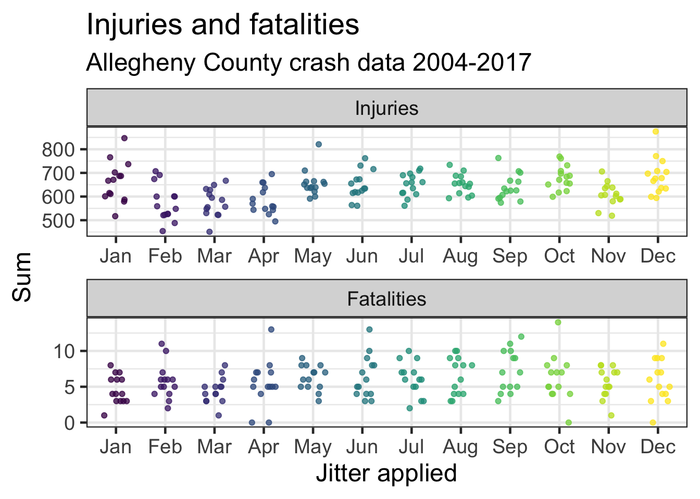
This shows the number of pedestrian fatalities by month.
df %>%
select(crash_year, crash_month, ped_death_count) %>%
group_by(crash_year, crash_month) %>%
summarize(ped_death_count = sum(ped_death_count, na.rm = TRUE)) %>%
ggplot(aes(crash_month, ped_death_count, color = crash_month)) +
geom_jitter(height = .15,
width = .25,
show.legend = FALSE) +
scale_color_viridis("Month",
discrete = TRUE) +
labs(title = "Pedestrian fatalities",
subtitle = my_subtitle,
x = "One dot = Month/Year. Jitter applied",
y = "Sum")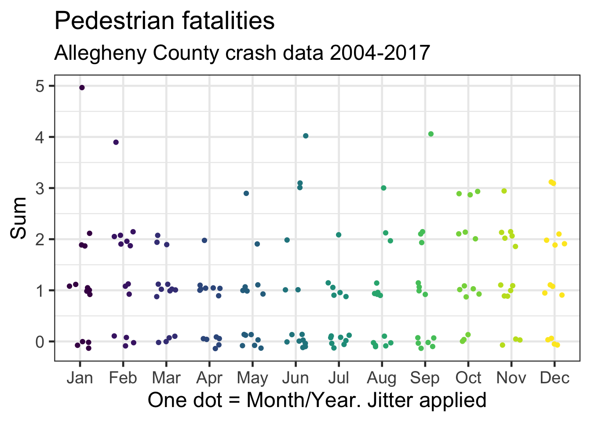
The rate of increase in the number of fatalities among belted vehicle occupants has been decreasing, while the rate among unbelted occupants has been increasing.
df %>%
select(crash_year, crash_month, belted_death_count, unb_death_count) %>%
arrange(crash_year, crash_month) %>%
mutate(time_period = make_date(year = crash_year, month = crash_month)) %>%
group_by(time_period, crash_year, crash_month) %>%
summarize(belted_death_count = sum(belted_death_count),
unb_death_count = sum(unb_death_count)) %>%
gather(death_type, death_count, -c(time_period, crash_year, crash_month)) %>%
arrange(death_type, time_period) %>%
group_by(death_type) %>%
mutate(death_count_cum = cumsum(death_count)) %>%
ungroup() %>%
mutate(death_type = factor(death_type,
levels = c("belted_death_count", "unb_death_count"),
labels = c("Belted deaths", "Unbelted deaths"))) -> df_belted_unbelted
df_belted_unbelted %>%
ggplot(aes(time_period, death_count_cum, color = death_type, group = death_type)) +
geom_line(size = 2) +
scale_color_viridis("", discrete = TRUE) +
scale_y_continuous(label = comma) +
labs(title = "Car occupant fatalities",
subtitle = my_subtitle,
x = "",
y = "Cumulative sum of deaths",
caption = my_caption) +
theme(panel.grid = element_blank())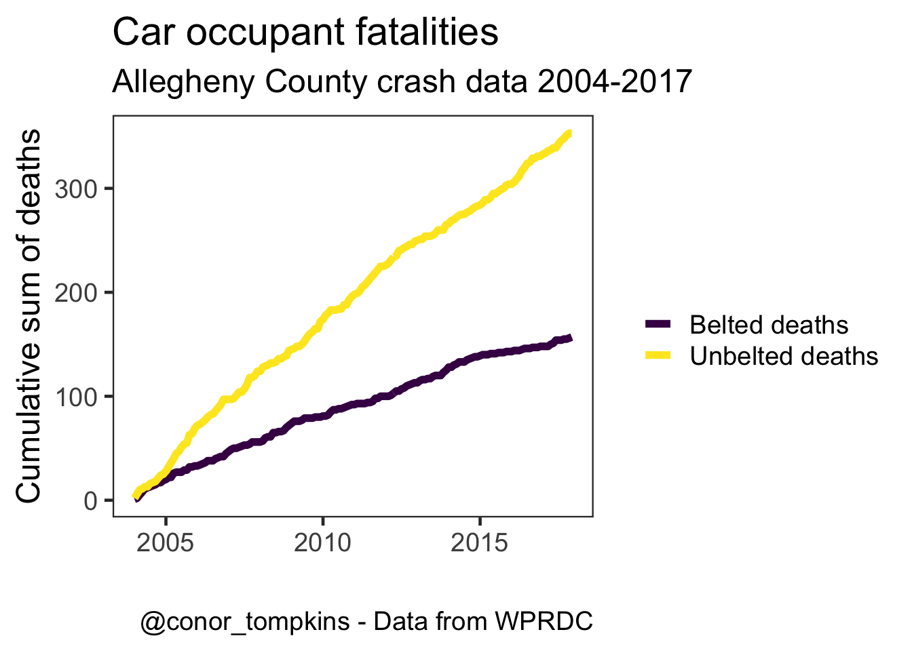